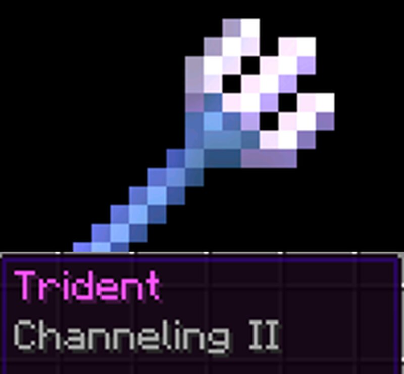

Claude Code sessions that hand tasks to each other - across machines.
While you talk to one session, it can drop a task straight into another's chat. No second terminal, no copy-paste, no context-shuffling between windows.
🔱 Named for Minecraft's Channeling enchant - strike one trident, and the bolt lands somewhere else.
Real work spans machines and sessions - a UI here, a backend on a beefier box, a model server on the cluster. When the session you're talking to realizes another one needs to do something, you become the messenger: alt-tab, copy, paste, re-explain the context. trident removes that hop.
trident is a Claude Code channel - an MCP server each session runs locally. Every session connects to one shared hub that routes messages between them, so any session can inject a task into any other.
A small server Claude Code spawns over stdio. It exposes two tools - trident_roster (who's online) and trident_send (hand a task to a session by name, or broadcast to all).
One lightweight broker every session dials into. The first machine starts it automatically; everyone else points at it over Tailscale by its stable 100.x IP.
A sent task lands in the target session as a <channel> event tagged with the sender - so that Claude reads it as a hand-off and just does it, in its own folder, with its own permissions.
Launch sessions with Claude Code's --rc (remote control) and they show up in the web app and on your phone, synced - so you can drive the whole fleet from one place.
First make sure every machine is on the same Tailscale tailnet (tailscale up, then tailscale ip -4 for the hub's address). Then install the binary - it detects your OS and pulls the right build:
# macOS / Linux / WSL curl -fsSL https://raw.githubusercontent.com/csaben/trident/main/install.sh | sh # native Windows PowerShell irm https://raw.githubusercontent.com/csaben/trident/main/install.ps1 | iex
# on the hub machine - runs the broker + launches a session trident host # on every other machine - point at the hub's tailnet IP trident join http://100.x.y.z:8790
Each launches Claude Code with the channel and --rc, so every session is watchable from the web and your phone. Then just describe the cross-session work - "have the backend session add a /tts endpoint" - and trident carries it over. Full setup and the security model live in the README.
Desktop, laptop, a GPU box in the closet - if it's on your tailnet, it's a session you can delegate to.
On one machine the hub starts itself. Across machines it's a single address to point at.
Send a task to one session by name, or fan it out to every session at once.
Sessions launched with --rc stream to claude.ai/code and the mobile apps - watch and steer from anywhere.
Traffic rides your encrypted tailnet. No public ports, no inbound exposure - the hub is yours alone.
Channel server, hub, and launcher are a single static Rust binary - no runtime to install.